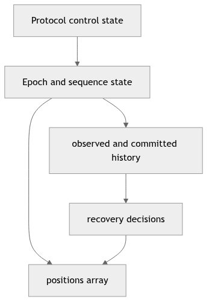
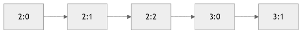
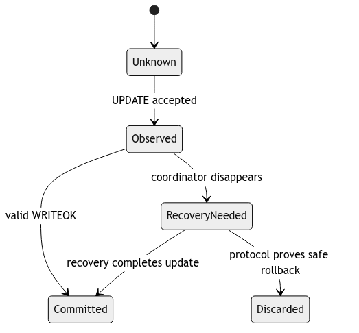
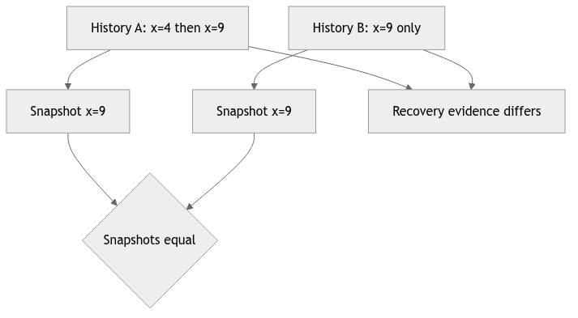
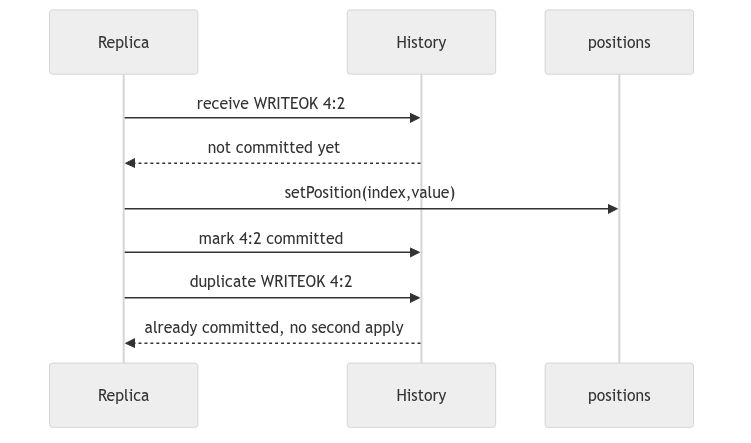
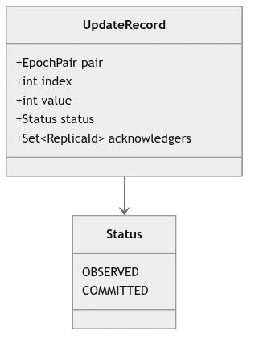

Learning goal. Understand what data each replica stores, how updates are ordered, and why a history is needed in addition to the current array.
Current snapshot: feature/electionTransaction at d1222a2.
History implementation inspected separately: origin/feat/UpdateTransaction at 59bbe80.
A replica stores several categories of state that answer different questions.
positions[] is the database visible to reads. getPosition and setPosition validate indexes against the fixed list length.
coordinatorID records which numeric replica ID this actor currently believes is coordinator.
epochPair records the newest ordering position known locally. It combines coordinator term and sequence within the term.
activeTransactions, heartbeat FSM, election sets/maps, crash status, and—on the update branch—updateHistory remember ongoing work and recovery evidence.
Do not treat all four as one “database.” The array is the current materialized value; history and protocol state explain how that value was reached and what may still need completion.
Every replica constructs an integer array of AbstractReplica.POSITIONS_LIST_LENGTH, currently 100. Java initializes it to zero.
A local read returns one element. A committed update eventually changes one element. The callback callbackOnUpdateApplied(index, value) must fire immediately after a real local application so tests can observe delivery.
Setting positions[index] is not by itself a distributed update. The total-order protocol determines when the write is allowed to become visible.
EpochPair.compareTo first compares epoch, then sequence:
<1, 9> < <1, 10>
<1, 999> < <2, 0>
The second comparison is valid because a newer coordinator term outranks every sequence from an older term.
Replica.setEpochPair rejects null and prevents moving backwards. Equal values are accepted. This protects one local monotonicity invariant but does not itself prove that every replica advances consistently.
The update branch initializes epochPair to <0,0>. The current election branch leaves it at Java’s default null until later behavior sets it. Heartbeat messages tolerate a null start pair during initial setup.
This is not a cosmetic difference. Candidate construction distinguishes “has observed an update” from “no observed update” based on whether the local epoch pair is null. Final integration must define one clear meaning for the initial pair:
<0,0> mean no update yet?The election code already models no observed update explicitly in ElectionCandidate, which avoids inventing history simply to remove null.
The specification says replicas retain observed updates for recovery. The update feature branch uses:
Map<EpochPair, UpdateTransaction> updateHistory
Conceptually, a durable history record should contain immutable update facts:
epochPair -> (index, value, observed/committed status)
Storing a mutable FSM object is convenient during development, but it couples recovery data to transaction lifecycle and owner state. A report must document what the actual map contains, not silently replace it with an ideal design.
The map is absent from the current election branch. Consequently, current synchronization cannot calculate a per-follower list of missing update records.
These terms must be kept separate.
(index, value, epochPair).WRITEOK and mutates positions[].During coordinator failure, one replica may have observed an update without applying it. Another may have applied it before crashing. Uniform agreement requires recovery to determine whether that update must be completed across survivors.
The election candidate needs the freshest observed order information because the most useful new coordinator is the one with the best recovery evidence, not merely the one whose array happens to contain a value.
Suppose index 4 originally contains 10:
U1: <2,7> sets index 4 to 20
U2: <2,8> sets index 4 back to 10
Looking only at positions[4] == 10 cannot reveal whether neither update occurred or both occurred. History preserves order and identity, which are required for duplicate prevention and recovery.
Similarly, sending only a final snapshot can make arrays converge but cannot necessarily prove that all required update deliveries and ordering semantics were honored.
SynchronizationMsg contains:
The constructor copies the input array, and getPositions() returns another copy. This protects actor encapsulation: the sender and receiver cannot mutate the same array object.
Followers validate sender identity, expected failed coordinator, strictly newer epoch, and array length before copying the snapshot into local state.
This is useful state convergence, but it is narrower than full history-based replay of incomplete updates required by the specification.
The current election winner scans candidates for the maximum observed epoch and chooses:
newEpoch = maximumObservedEpoch + 1
newSequence = 0
That makes the new term newer than all candidate terms. A full recovery design must decide whether sequence zero is reserved as the starting marker or used for the first new update, and whether incomplete old-epoch work is completed before advancing.
The specification’s key requirement is that old incomplete work is resolved before normal writes in the new epoch.
EpochPair identifies at most one logical update.TestEpochPair checks ordering and equality. Election tests check candidate ordering and defensive copying of synchronization arrays. Callback contract tests check that update application is reported somewhere in code.
Missing or incomplete evidence includes:
Why keep history if every replica already has positions[]? The array contains only the latest materialized values. Recovery needs update identity, order, and information about incomplete work; two different histories can produce the same array.
What does <epoch, sequence> guarantee? It supplies a total ordering key for updates when correctly assigned and propagated. The class comparison alone does not enforce broadcast, quorum, or delivery.
The invariant to remember is: the array answers “what value do I expose now?”, while history answers “which ordered updates justify and may still affect that value?”
protocol state: coordinator, FSM phase, pending ACK set
|
v
ordering state: current EpochPair, next sequence, term ownership
|
v
materialized state: positions[index] values exposed to reads
|
v
recovery evidence: committed history + observed/incomplete updates
Students often inspect only positions[]. That is the materialized cache, not
the whole replicated state. A coordinator can have evidence that an update
reached a quorum even when one follower’s array is still old. During recovery,
the candidate needs the evidence and ordering metadata to decide whether to
replay, install, or ignore that update.
An EpochPair can be read as (term, sequence). A larger term means a newer
coordinator generation; within one term, a larger sequence means a later
update. A comparison helper is useful only if every caller uses the same
ordering and rejects malformed values.
// Study pseudocode, not a replacement implementation
int compare(EpochPair a, EpochPair b) {
if (a.term() != b.term()) return compare(a.term(), b.term());
return compare(a.sequence(), b.sequence());
}
if (incoming.compareTo(local) <= 0) {
ignoreAsStale(); // duplicate delivery is harmless
} else {
rememberForRecovery(incoming);
}
The <= 0 test gives idempotence: a retransmitted update must not be applied
twice. It does not, by itself, prove that a missing intermediate sequence can
be skipped. If the protocol requires contiguous history, add a separate
“expected next pair” check and a recovery path.
Start with positions[2] = 0. Update A sets it to 4, then update B sets it to
9. A snapshot containing only 9 lets a new replica answer a current read,
but it cannot prove whether B followed A, whether A was committed, or whether
another index was changed between them. A history containing (term,1,A) and
(term,2,B) answers those questions and can be checked against another
replica’s history. This is why recovery reports must discuss both arrays and
history rather than treating them as interchangeable.
Trace the first update from InitSystem. What is the starting epoch? Is it a
real pair such as (0,0), or a nullable field that is filled later? A nullable
starting pair may be acceptable in a constructor, but it becomes dangerous if
the update protocol calls comparison, history insertion, or serialization before
the field is assigned. For every nullable protocol field, document the state in
which null is legal and the guard that prevents earlier use.
Construct two histories that produce the same final positions[] array but
have different update order. Explain why a recovery algorithm that copies only
the array cannot distinguish them, then name the metadata it should transfer.

Protocol control state says whether the replica is a coordinator, follower, electing, or synchronizing. Ordering state assigns meaning to update IDs. Materialized state answers current reads. History explains how the replica reached that materialized value and which incomplete work it observed. Debugging only the array hides the evidence needed for recovery.
Write each layer separately in a trace. A follower may have observed pair 3:7 without applying it, so its history knowledge is newer than its visible array. That is not automatically an inconsistency; it is an intermediate protocol state that must be resolved by WRITEOK or recovery.

Compare term first, then sequence. Pair 3:0 is newer than 2:999 because term 3 represents a later coordinator generation. Within term 3, only its coordinator should assign increasing sequence numbers. This rule gives a total comparison; it does not guarantee that all numbers were assigned correctly or that gaps are safe.
Document the initial pair. If the field begins null, name the transition that creates the first real pair and reject comparison before it. A sentinel such as 0:0 simplifies code only if the specification reserves that meaning.

An observed update is recovery evidence, not necessarily a readable value. A committed update has crossed the protocol’s visibility boundary. Conflating the two lets a follower expose an update that may later be discarded or lets recovery erase an update that was already visible somewhere.
History entries should therefore carry status or live in collections whose
meaning is explicit. A mutable UpdateTransaction object is a poor durable
record because later FSM transitions can rewrite what history appears to say.
Prefer immutable update records containing pair, index, value, and status.

Snapshots collapse history. This is useful for efficient reads but dangerous for proving update order. In history A, another replica may have acknowledged the first update; in history B, that identity never existed. Copying x=9 makes arrays converge yet cannot reconstruct which callbacks, retries, or incomplete quorum decisions remain valid.
Snapshot synchronization can still be part of a correct design when paired with a checkpoint certificate or a retained suffix of ordered history. The inspected code should be described according to what it actually transfers, not what a complete recovery protocol might transfer.

The order of state mutation and history marking must survive duplicate delivery and crashes at simulated injection points. Within one actor turn the two Java operations are serialized, but the crash model may intentionally stop between logical steps. Tests should assert one visible mutation and one history entry after duplicate WRITEOK.
If application is simply assigning a value, applying twice looks harmless. Do not rely on that accident: callbacks, sequence advancement, and future operations may not be idempotent. The protocol should enforce at-most-once by identity.

Propose an immutable record and justify every field. Decide whether ACK sender sets belong in every replica’s record or only coordinator recovery evidence. Define equality so duplicate messages find the same logical update. Then write invariants: one payload per pair, monotonic status, committed records applied once, and no newer-term write before required old-term recovery completes.
Finally, compare that design with the inspected branch. Mark implemented fields, nullable fields, and missing transitions. This comparison is more educational than presenting ideal pseudocode as if it were current behavior.
The integer array is the application’s visible state, but it is not enough to run the protocol safely. If position 3 currently contains 9, that value alone does not reveal which update installed it, whether a quorum acknowledged that update, whether another update was observed but not committed, or which coordinator term produced it. Recovery needs those distinctions. This is why a distributed replica stores both materialized state and protocol metadata.
Think of materialization as folding an ordered history into an array. Starting
from the initial array, apply each committed update in EpochPair order. The
result is the current snapshot. Two histories can fold to the same snapshot:
x=4, x=9 and just x=9 both finish with 9. They are not equivalent evidence
if the first update was acknowledged by a quorum or if another replica still
waits for its completion. A snapshot answers “what value would a local read
return?” A history answers “how did the system acquire the obligations it must
preserve?”
An EpochPair(e, i) is compared lexicographically. Epoch is the coordinator
term; sequence is the position assigned within that term. Thus <4,9> is
older than <5,0> even though 9 is numerically greater than 0. Resetting the
sequence after election is safe only because the epoch increases. This is a
logical clock: it captures protocol order without pretending to be physical
time.
Uniqueness needs more than a compareTo method. One coordinator must be the
only allocator for an epoch, it must not reuse a sequence for a different
payload, and a new coordinator must choose a strictly newer epoch. Participants
must reject a pair that conflicts with retained history. The Java value object
makes comparison deterministic; the election and update protocols create the
conditions under which those values have trustworthy meaning.
Receiving UPDATE lets a replica record that the coordinator proposed a pair and payload. It does not yet authorize visibility. Receiving valid WRITEOK means the coordinator obtained the required quorum and the replica can materialize the update. A useful history model therefore has a monotonic state transition from absent, to observed, to committed. It never moves backward.
This distinction protects reads and supports recovery. Applying at observation time risks exposing a proposal that no quorum ever supported. Recording nothing until WRITEOK risks losing the freshest evidence when the coordinator crashes after some UPDATE deliveries. The observed record occupies the middle: not yet visible, but available to an election or recovery procedure that must decide whether interrupted work needs completion.
Network or recovery logic can present the same WRITEOK more than once. A participant should look up the pair, verify the payload, and detect that the commit transition already occurred. It must not apply again or emit another “update applied” callback. Assignment writes happen to overwrite an integer, so repeating the same assignment may leave the same array. That accidental state equality does not make the protocol idempotent: duplicate callbacks, history entries, or sequence movement remain observable effects.
An equally important case is one pair with two different payloads. The second message is not a duplicate; it is a protocol contradiction. Silently applying it would allow the same logical log position to mean different things at different replicas. The correct response is to reject and surface the inconsistency, not to let “last arrival wins” rewrite history.
Synchronization that copies only positions can make immediate reads agree,
but it leaves open how future duplicate UPDATE or WRITEOK messages are judged.
Copying history without validating order can import contradictions. A complete
installation policy defines the accepted sender and epoch, validates snapshot
shape, installs or merges ordered records, cleans old FSMs, updates the
coordinator view, and only then releases new writes.
Immutability matters at this boundary. If a synchronization message shares a mutable array or list with the winner, a follower could observe later changes without processing a message. Defensive copies restore the actor model: the message is a value describing one snapshot, and each receiver independently installs actor-owned state.
Choose one index and trace five columns after every event: visible value, current epoch, next sequence, observed records, and committed records. Inject duplicate and conflicting messages, then an election. A correct explanation must show which column changes and why. This small ledger makes hidden metadata visible and reveals whether recovery is preserving history or merely copying the latest array.